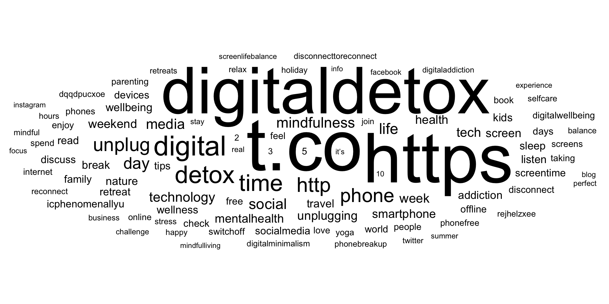
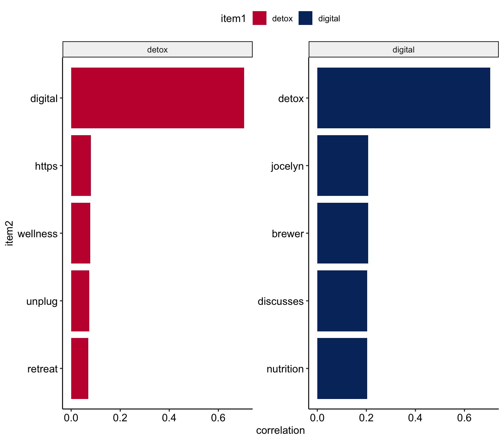
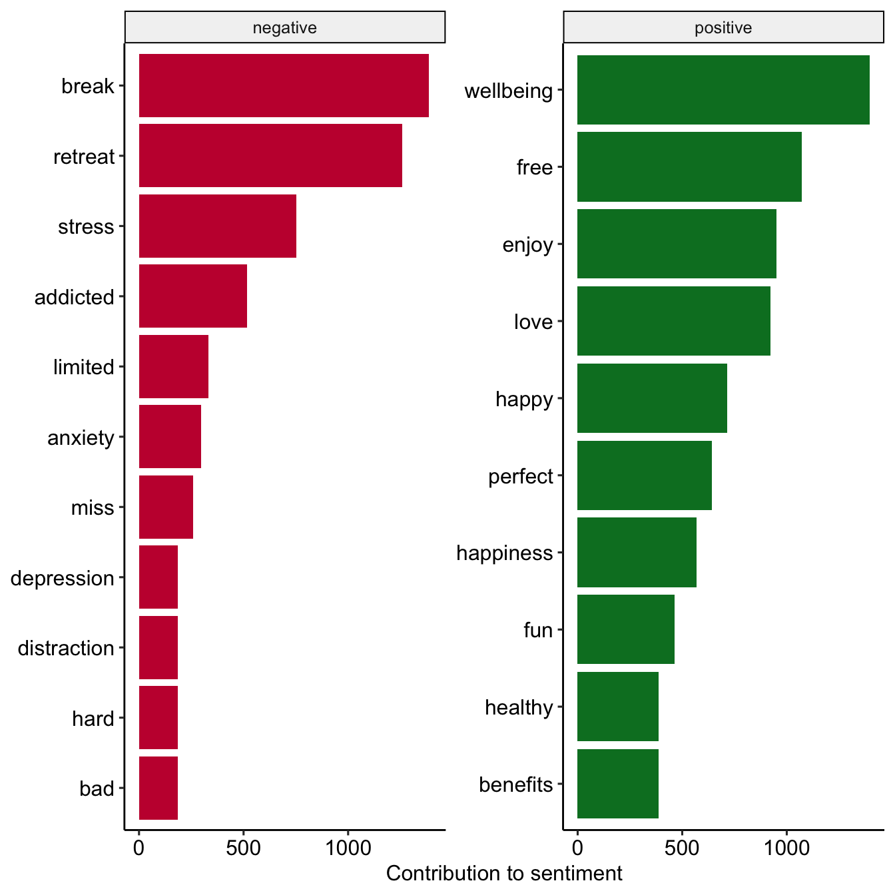
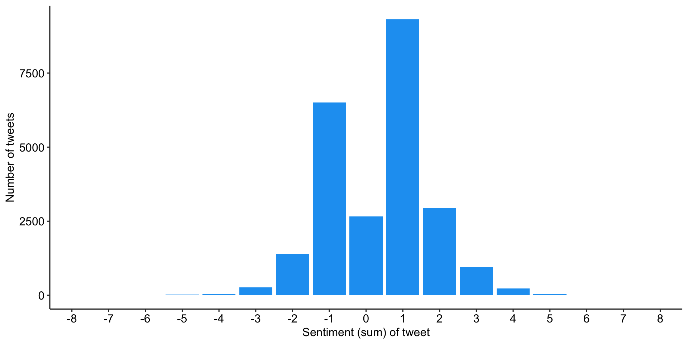

| Session | Datum | Topic | Presenter |
|---|---|---|---|
Introduction |
|||
1 |
25.10.2023 |
Kick-Off |
Christoph Adrian |
01.11.2023 |
🎃 Holiday (No Lecture) |
||
2 |
08.11.2023 |
Einführung in DBD |
Christoph Adrian |
3 |
15.11.2023 |
🔨 Working with R |
Christoph Adrian |
🗣️ |
Presentations |
||
4 |
22.11.2023 |
📚 Media routines & habits |
Group C |
5 |
29.11.2023 |
|
|
6 |
06.12.2023 |
📚 Digital disconnection |
Group A |
7 |
13.12.2023 |
📦 Data collection methods |
Group D |
8 |
|
📦 Automatic text analysis 🎥 |
Group B |
🎄Christmas Break (No Lecture) |
|||
📂 Project |
Analysis of media content |
||
9 |
10.01.2024 |
🔨 Text as data |
Christoph Adrian |
10 |
17.01.2024 |
🔨 Automatic analysis of text in R |
Christoph Adrian |
11 |
24.01.2024 |
🔨 Q&A |
Christoph Adrian |
12 |
31.01.2024 |
📊 Presentation & Discussion |
All groups |
13 |
07.02.2024 |
🏁 Recap, Evaluation & Discussion |
Christoph Adrian |
🔨 Text as data in R
Session 09
10.01.2024
print("Hello course!")
👨💻 Christoph Adrian
- PhD student @ Chair of Communication Science
- Text as Data & Social Media Usage (Effects)
- Conversational in R, Beginner in Python, SPSS & Stata
Schedule
Agenda
Digital disconnection on (not 𝕏)
Background on the research project & data
Looking at the discourse
The theoretical background: digital disconnection
Increasing trend towards more conscious use of digital media (devices), including (deliberate) non-use with the aim to restore or improve psychological well-being (among other factors)
But how do “we” talk (on Twitter) about digital detox/disconnection:
Is social media a 💊 drug, 👹 demon or 🍩 donut?

digital detox, #digitaldetox, …
Information about the data collection process
- Goal: Collect all tweets (until 31.12.2022) that mention or discuss digital detox (and similar terms) on Twitter (not 𝕏)
- Actual collection was done in the beginning of 2023 (before the takeover by Musk and the associated change in API access)
- Access via Twitter Academic Research Product Track v2 API with the help of the
academictwitteRpackage (Barrie & Ho, 2021)
A quick glimpse
The structure of the data set & available variables
Rows: 361,408
Columns: 37
$ tweet_id <chr> "7223508762", "7222271007", "7219735500", "7216…
$ user_username <chr> "Princessbride24", "winnerandy", "the_enthusias…
$ text <chr> "@Ali_Sweeney detox same week as the digital cl…
$ created_at <dttm> 2009-12-31 05:25:55, 2009-12-31 04:44:20, 2009…
$ in_reply_to_user_id <chr> "23018333", NA, NA, NA, NA, NA, NA, "19475829",…
$ author_id <chr> "16157429", "14969949", "16217478", "18001568",…
$ lang <chr> "en", "en", "en", "en", "en", "en", "en", "en",…
$ possibly_sensitive <lgl> FALSE, FALSE, FALSE, FALSE, FALSE, FALSE, FALSE…
$ conversation_id <chr> "7222577237", "7222271007", "7219735500", "7216…
$ user_created_at <chr> "2008-09-06T15:13:58.000Z", "2008-06-01T07:34:3…
$ user_protected <lgl> FALSE, FALSE, FALSE, FALSE, FALSE, FALSE, FALSE…
$ user_name <chr> "Sam", "Andrew", "The Enthusiast", "🌻BahSun🌻"…
$ user_verified <lgl> FALSE, FALSE, FALSE, FALSE, FALSE, FALSE, FALSE…
$ user_description <chr> "As you wish.", "Life is a playground, so enjoy…
$ user_location <chr> "Houston", "California", "Melbourne, Australia"…
$ user_url <chr> "https://t.co/hchLJvesW1", NA, "http://t.co/bLK…
$ user_profile_image_url <chr> "https://pbs.twimg.com/profile_images/587051289…
$ user_pinned_tweet_id <chr> NA, NA, NA, NA, "1285575168010735621", NA, NA, …
$ retweet_count <int> 0, 0, 0, 0, 0, 0, 0, 0, 0, 0, 0, 0, 0, 0, 0, 0,…
$ like_count <int> 0, 0, 1, 0, 0, 0, 0, 0, 0, 0, 0, 0, 0, 0, 0, 0,…
$ quote_count <int> 0, 0, 0, 0, 0, 0, 0, 0, 0, 0, 0, 0, 0, 0, 0, 0,…
$ user_tweet_count <int> 3905, 18808, 4494, 35337, 284181, 18907, 39562,…
$ user_list_count <int> 7, 12, 101, 49, 540, 82, 91, 12, 117, 46, 192, …
$ user_followers_count <int> 103, 481, 2118, 693, 17677, 2527, 8784, 100, 26…
$ user_following_count <int> 370, 1488, 391, 317, 16470, 320, 11538, 120, 25…
$ sourcetweet_type <chr> NA, NA, NA, NA, NA, NA, NA, NA, NA, NA, NA, NA,…
$ sourcetweet_id <chr> NA, NA, NA, NA, NA, NA, NA, NA, NA, NA, NA, NA,…
$ sourcetweet_text <chr> NA, NA, NA, NA, NA, NA, NA, NA, NA, NA, NA, NA,…
$ sourcetweet_lang <chr> NA, NA, NA, NA, NA, NA, NA, NA, NA, NA, NA, NA,…
$ sourcetweet_author_id <chr> NA, NA, NA, NA, NA, NA, NA, NA, NA, NA, NA, NA,…
$ year <dbl> 2009, 2009, 2009, 2009, 2009, 2009, 2009, 2009,…
$ month <dbl> 12, 12, 12, 12, 12, 12, 12, 12, 12, 12, 12, 12,…
$ day <int> 31, 31, 31, 31, 30, 30, 30, 29, 28, 28, 27, 27,…
$ hour <int> 5, 4, 3, 1, 22, 2, 0, 20, 21, 1, 19, 8, 8, 3, 9…
$ minute <int> 25, 44, 22, 42, 49, 31, 39, 23, 45, 47, 31, 28,…
$ retweet_dy <lgl> FALSE, FALSE, FALSE, FALSE, TRUE, FALSE, FALSE,…
$ detox_dy <lgl> FALSE, FALSE, FALSE, FALSE, FALSE, FALSE, FALSE…Biggest attention in 2016, steady decline thereafter
Distribution of tweets with reference to digital detox over time
Expand for full code
tweets_correct %>%
ggplot(aes(x = as.factor(year), fill = retweet_dy)) +
geom_bar() +
labs(
x = "",
y = "Number of tweets",
fill = "Is the tweet a retweet?"
) +
scale_fill_manual(values = c("#1DA1F2", "#004389")) +
theme_pubr() +
# add annotations
annotate(
"text",
x = 14, y = 55000,
label = "Increase of character limit from 140 to 280") +
geom_curve(
data = data.frame(
x = 14.2965001234837,y = 53507.2283841571,
xend = 11.5275706534335, yend = 45412.4966032138),
mapping = aes(x = x, y = y, xend = xend, yend = yend),
angle = 127L,
curvature = 0.28,
arrow = arrow(30L, unit(0.1, "inches"), "last", "closed"),
inherit.aes = FALSE)Sporadic tweeting on the topic, mainly in English
Tweets with reference to ditigal detox by (participating) users and language
Expand for full code
# Number of tweets by user
tweets_correct %>%
group_by(author_id) %>%
summarize(n = n()) %>%
mutate(
n_grp = case_when(
n <= 1 ~ 1,
n > 1 & n <= 10 ~ 2,
n > 10 & n <= 25 ~ 3,
n > 25 & n <= 50 ~ 4,
n > 50 & n <= 75 ~ 5,
n > 75 & n <= 100 ~ 6,
n > 100 ~ 7
),
n_grp_fct = factor(
n_grp,
levels = c(1:7),
labels = c(
" 1",
" 2 - 10", "11 - 25",
"26 - 50", "50 - 75",
"75 -100", "> 100")
)
) %>%
sjmisc::frq(n_grp_fct) %>%
as.data.frame() %>%
select(val, frq:cum.prc) %>%
# create table
gt() %>%
# tab_header(
# title = "Tweets by users with a least on tweet"
# ) %>%
cols_label(
val = "Number of tweets by user",
frq = "n",
raw.prc = html("%<sub>raw</sub>"),
cum.prc = html("%<sub>cum</sub>")
) %>%
gt_theme_538()
# Language of Tweets
tweets_correct %>%
sjmisc::frq(
lang,
sort.frq = c("desc"),
min.frq = 2000
) %>%
as.data.frame() %>%
select(val, frq:cum.prc) %>%
# create table
gt() %>%
# tab_header(
# title = "Language of the collected tweets"
# ) %>%
cols_label(
val = "Twitter language code",
frq = "n",
raw.prc = html("%<sub>raw</sub>"),
cum.prc = html("%<sub>cum</sub>")
) %>%
gt_theme_538()| Number of tweets by user | n | %raw | %cum |
|---|---|---|---|
| 1 | 143364 | 77.21 | 77.21 |
| 2 - 10 | 39981 | 21.53 | 98.74 |
| 11 - 25 | 1647 | 0.89 | 99.63 |
| 26 - 50 | 435 | 0.23 | 99.86 |
| 50 - 75 | 88 | 0.05 | 99.91 |
| 75 -100 | 55 | 0.03 | 99.94 |
| > 100 | 109 | 0.06 | 100.00 |
| NA | 0 | 0.00 | NA |
| Twitter language code | n | %raw | %cum |
|---|---|---|---|
| en | 274351 | 75.91 | 75.91 |
| fr | 20407 | 5.65 | 81.56 |
| es | 16248 | 4.50 | 86.05 |
| de | 14091 | 3.90 | 89.95 |
| pt | 7127 | 1.97 | 91.92 |
| it | 5999 | 1.66 | 93.58 |
| da | 3490 | 0.97 | 94.55 |
| in | 3095 | 0.86 | 95.41 |
| ja | 2428 | 0.67 | 96.08 |
| n < 2000 | 14172 | 3.92 | 100.00 |
| NA | 0 | 0.00 | NA |
Text as data in R
Part I: Basics of tidy text wrangling & sentiment analysis
Deciding on the right method
Different approaches of computational analysis of text
No method that is the one, but specific applications for specific methods
Apart from analyzing basic word and text metrics, there are three variants of automatic text analysis:
🔎 Dictionary Approaches (e.g. Sentiment Analysis)
Unsupervised Text Analysis (e.g. Topic Modeling)
Supervised Text Analysis (e.g. ML Classifier)
Building a shared vocabulary
Important terms & definitions

Explore tweets with #digitaldetox
Working through a typical text analysis using tidy data principles

- But: Tidy data has a specific structure:
- Each variable is a column
- Each observation is a row
- Each type of observational unit is a table.
- Thus the tidy text format is defined as a table with one-token-per-row (Silge & Robinson, 2017).
Focusing on #digitaldetox
Build a subsample
Tokenization of the tweets
Transform data to tidy text
# Common HTML entities
remove_reg <- "&|<|>"
# Create tidy data
tweets_tidy <- tweets_detox %>%
# Remove HTML entities
mutate(text = str_remove_all(text, remove_reg)) %>%
# Tokenization
tidytext::unnest_tokens("text", text) %>%
# Remove stopwords
filter(!text %in% tidytext::stop_words$word)
# Preview
tweets_tidy %>%
select(tweet_id, user_username, text) %>%
print(n = 5)# A tibble: 639,459 × 3
tweet_id user_username text
<chr> <chr> <chr>
1 5777201122 pblackshaw blackberry
2 5777201122 pblackshaw iphone
3 5777201122 pblackshaw read
4 5777201122 pblackshaw pew
5 5777201122 pblackshaw report
# ℹ 639,454 more rowsCount token frequency
Summarize all tokens over all tweets
# A tibble: 87,172 × 2
text n
<chr> <int>
1 t.co 57530
2 https 52890
3 digitaldetox 46642
4 digital 8521
5 detox 6623
6 time 6000
7 http 4674
8 phone 4213
9 unplug 4021
10 day 2939
11 life 2548
12 social 2449
13 mindfulness 2408
14 media 2264
15 technology 2065
# ℹ 87,157 more rowsThe (Unavoidable) Word Cloud
Visualization of Top 100 token
More than just single words
Modeling realtionships between words: n-grams and correlations
Many interesting text analyses are based on the relationships between words
- whether examining which words tend to follow others immediately (n-grams),
- or that tend to co-occur within the same documents (correlation)

Combinations of words
Count word pairs within tweets
# A tibble: 3,466,216 × 3
item1 item2 n
<chr> <chr> <dbl>
1 t.co digitaldetox 40640
2 digitaldetox t.co 40640
3 t.co https 36605
4 https t.co 36605
5 https digitaldetox 36486
6 digitaldetox https 36486
7 digital digitaldetox 7791
8 digitaldetox digital 7791
9 t.co digital 7365
10 digital t.co 7365
11 https digital 6856
12 digital https 6856
13 detox digitaldetox 6004
14 digitaldetox detox 6004
15 t.co detox 5672
# ℹ 3,466,201 more rowsCorrelation of words
Summarize and correlate tokens within tweets
# A tibble: 41,820 × 3
item1 item2 correlation
<chr> <chr> <dbl>
1 jocelyn brewer 0.999
2 brewer jocelyn 0.999
3 jocelyn discusses 0.983
4 discusses jocelyn 0.983
5 discusses brewer 0.982
6 brewer discusses 0.982
7 icphenomenallyu discuss 0.981
8 discuss icphenomenallyu 0.981
9 taniamulry wealth 0.979
10 wealth taniamulry 0.979
11 jocelyn nutrition 0.968
12 nutrition jocelyn 0.968
13 nutrition brewer 0.967
14 brewer nutrition 0.967
15 discusses nutrition 0.951
# ℹ 41,805 more rowsCorrelates of detox and digital
Display correlates for specific token
tweets_pairs_corr %>%
filter(
item1 %in% c("detox", "digital")
) %>%
group_by(item1) %>%
slice_max(correlation, n = 5) %>%
ungroup() %>%
mutate(
item2 = reorder(item2, correlation)
) %>%
ggplot(
aes(item2, correlation, fill = item1)
) +
geom_bar(stat = "identity") +
facet_wrap(~ item1, scales = "free") +
coord_flip() +
scale_fill_manual(
values = c("#C50F3C", "#04316A")) +
theme_pubr()
Let’s talk about sentiments
Dictionary based approach of text analysis

Atteveldt et al. (2021) argue that sentiment, in fact, are quite a complex concepts that are often hard to capture with dictionaries.
The meaning of “positive/negative”
Most commmon positive and negative words
tweets_sentiment_count <- tweets_tidy %>%
inner_join(
get_sentiments("bing"),
by = c("text" = "word"),
relationship = "many-to-many") %>%
count(text, sentiment)
# Preview
tweets_sentiment_count %>%
group_by(sentiment) %>%
slice_max(n, n = 10) %>%
ungroup() %>%
mutate(text = reorder(text, n)) %>%
ggplot(aes(n, text, fill = sentiment)) +
geom_col(show.legend = FALSE) +
facet_wrap(
~sentiment, scales = "free_y") +
labs(x = "Contribution to sentiment",
y = NULL) +
scale_fill_manual(
values = c("#C50F3C", "#007D29")) +
theme_pubr()
Enrich the original data
Link word sentiment to tidy data
tweets_sentiment <- tweets_tidy %>%
inner_join(
get_sentiments("bing"),
by = c("text" = "word"),
relationship = "many-to-many") %>%
count(tweet_id, sentiment) %>%
pivot_wider(names_from = sentiment, values_from = n, values_fill = 0) %>%
mutate(sentiment = positive - negative)
# Check
tweets_sentiment # A tibble: 24,372 × 4
tweet_id positive negative sentiment
<chr> <int> <int> <int>
1 1000009901563838465 3 0 3
2 1000038819520008193 1 0 1
3 1000042717492187136 4 0 4
4 1000043574673715203 1 1 0
5 1000075155891281925 4 0 4
6 1000086637987139590 1 0 1
7 1000094334660825088 1 0 1
8 1000133715194920960 1 0 1
9 1000255467434729472 0 1 -1
10 1000271209353895938 1 1 0
# ℹ 24,362 more rowsSlightly more positive tweets than negative
Overall distribution sentiment by tweets
A trend towards positivity?
Development of tweet sentiment over the years
Expand for full code
# Create first graph
g1 <- tweets_correct %>%
filter(tweet_id %in% tweets_sentiment$tweet_id) %>%
left_join(tweets_sentiment) %>%
sjmisc::rec(
sentiment,
rec = "-8:-1=negative; 0=neutral; 1:8=positive") %>%
ggplot(aes(x = as.factor(year), fill = as.factor(sentiment_r))) +
geom_bar() +
labs(
x = "",
y = "Number of tweets",
fill = "Sentiment (sum) of tweet") +
scale_fill_manual(values = c("#C50F3C", "#90A0AF", "#007D29")) +
theme_pubr()
#theme(axis.text.x = element_text(angle = 90, vjust = 0.5, hjust=1))
# Create second graph
g2 <- tweets_correct %>%
filter(tweet_id %in% tweets_sentiment$tweet_id) %>%
left_join(tweets_sentiment) %>%
sjmisc::rec(
sentiment,
rec = "-8:-1=negative; 0=neutral; 1:8=positive") %>%
ggplot(aes(x = as.factor(year), fill = as.factor(sentiment_r))) +
geom_bar(position = "fill") +
labs(
x = "",
y = "Proportion of tweets",
fill = "Sentiment (sum) of tweet") +
scale_fill_manual(values = c("#C50F3C", "#90A0AF", "#007D29")) +
theme_pubr()
# COMBINE GRPAHS
ggarrange(g1, g2,
nrow = 1, ncol = 2,
align = "hv",
common.legend = TRUE) 📋 Hands on working with R
Various exercises on the content of today’s session
🧪 And now … you: Clean and repeat!
Redo the tidy text analysis pipeline with cleaned data
Objective of this exercise
- Brush up basic knowledge of working with R and the tidyverse
- Get to know the typical steps of tidy text analysis, from tokenisation and summarisation to visualisation.
Next steps
- Download files provided on StudOn or shared drives for the sessions
- Unzip the archive at a destination of your choice.
- Double click on the
Exercise-Text_as_data.Rprojto open the RStudio project. This ensures that all dependencies are working correctly. - Open the
exercise.qmdfile and follow the instructions. - Tip: You can find all code chunks used in the slides in the showcase.qmd (for the raw code) or showcase.html (with rendered outputs).
Time for questions
Thank you and see you next week!
References
Atteveldt, W. van, Trilling, D., & Arcíla, C. (2021). Computational analysis of communication: A practical introduction to the analysis of texts, networks, and images with code examples in python and r. John Wiley & Sons.
Barrie, C., & Ho, J. (2021). academictwitteR: An r package to access the twitter academic research product track v2 API endpoint. Journal of Open Source Software, 6(62), 3272. https://doi.org/10.21105/joss.03272
Silge, J., & Robinson, D. (2017). Text mining with r: A tidy approach (First edition). O’Reilly.
Vanden Abeele, M. M. P., Halfmann, A., & Lee, E. W. J. (2022). Drug, demon, or donut? Theorizing the relationship between social media use, digital well-being and digital disconnection. Current Opinion in Psychology, 45, 101295. https://doi.org/10.1016/j.copsyc.2021.12.007

Social Media as 💊, 👹 or 🍩 ?
Relationship between social media use, digital well-being and digital disconnection
What is at stake?
Addiction/health
Distraction
Well-being
Root cause of problem
Individual susceptibility
Addictive design
Inadequate fit
User agency
Agency is limited due to innate susceptibilities
Agency needs to be reclaimed from social media platforms
User has agency, but it is challenged by person-, technology- and context-specific elements
Focus of disconnection
Complete abstinence, re-training of the ‘faulty brain’ to break the dopamine link
Removing/weakening the distracting potential of tech, using persuasive design to support exerting social media self-control
Disconnection interventions tailored to persons and/or contexts to ‘optimize the balance’ between benefits and drawbacks of connectivity, mindful use
Digital disconnection examples
Digital detox, cognitive behavioral therapy
Muting phone, disabling notifications, putting phone in grey-scale, using apps that reward abstinence (e.g., Forest)
Locative disconnection, disconnection apps that extensive tailoring to persons and contexts, mindfulness training
(Vanden Abeele et al., 2022)